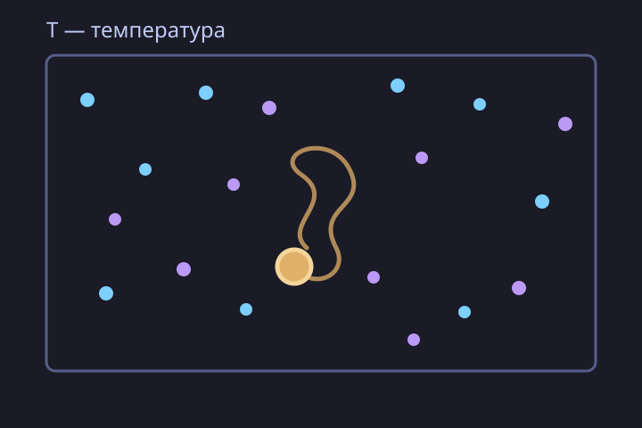
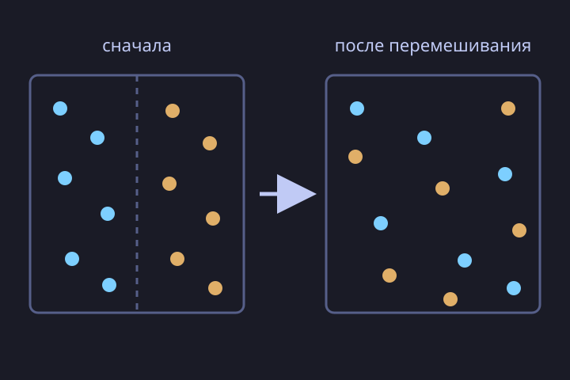
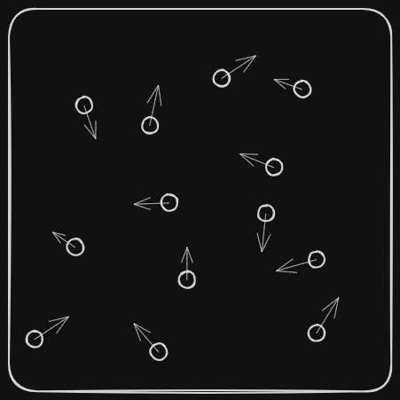
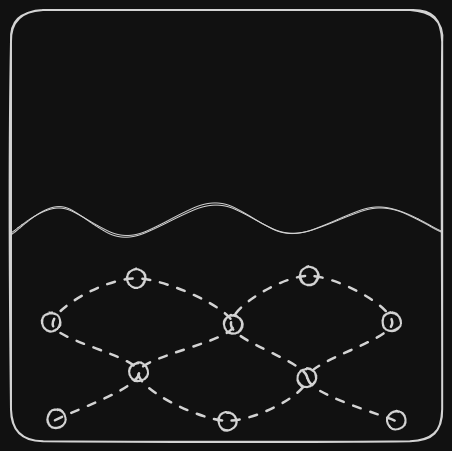
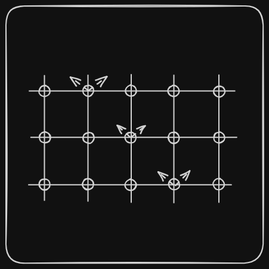

Связанные темы
Основные положения МКТ
- все тела состоят из мельчайших частиц: молекул, атомов или ионов;
- эти частицы постоянно и хаотически двигаются;
- между частицами существует взаимодействие: на больших расстояниях они притягиваются, а на маленьких ― отталкиваются.
Первое положение молекулярно-кинетической теории будет доказываться фотографиями веществ, выполненных с помощью специальных микроскопов, испарением веществ, уменьшением суммарного объема некоторых жидкостей в результате их смешивания друг с другом. Например, при смешивании спирта с водой маленькие молекулы воды займут промежутки между большими молекулами спирта (молекулы спирта в 2–3 раза крупнее молекул воды).
Второе положение молекулярно-кинетической теории подтверждается броуновским движением и диффузией.
Броуновское движение
Броуновское движение — хаотическое тепловое движение частиц в среде. В схематичной модели большая золотая частица меняет направление из-за неравномерных ударов окружающих молекул; показаны лишь некоторые молекулы. Параметр задаёт относительную температуру: чем она выше, тем быстрее идёт движение.

Диффузия
Диффузия — проникновение молекул одного вещества в промежутки между молекулами другого. В схематичной модели голубые и фиолетовые частицы сначала разделены, а затем постепенно перемешиваются. Параметр меняет скорость процесса: чем выше температура, тем быстрее происходит диффузия.
Свойства диффузии:
- наблюдается во всех телах (твёрдых, жидких, газообразных);
- наиболее быстро происходит в газах, медленней в жидкостях и еще медленнее в твёрдых телах;
- скорость диффузии увеличивается с ростом температуры и уменьшается при её уменьшении.

Третье положение молекулярно-кинетической теории будет доказываться существованием макроскопических тел.
Агрегатные состояния тел
| Х | Газ | Жидкость | Твердое тело |
|---|---|---|---|
| Рисунок |  |  |  |
| Форма | Не сохраняется | Не сохраняется | Сохраняется |
| Объем | Не постоянен | Постоянен | Постоянен |
| Порядок | Полный беспорядок | Ближний порядок | Полный порядок |
| Характер движения | Свободно летают по всему объему | Колеблются на месте, “перепрыгивают” | Колеблются на месте |
| Взаимодействие молекул | Слабое | Сильное | Огромное |
| Расстояние между молекулами | Большое | Среднее | Малое |
Устройство атома
В рамках работы с молекулярно-кинетической теорией необходимо знать и отличать такие понятия, как молекула, атом или ион.
Атом — электронейтральная частица вещества микроскопических размеров и массы. Атом состоит из атомного ядра и электронов. Атомное ядро — центральная часть атома, в которой сосредоточена основная его масса. Ядро заряжено положительно, заряд ядра определяет химический элемент, к которому относят атом. Электроны — стабильные, отрицательно заряженные элементарные частицы, летающие вокруг ядра.

Атом в целом нейтрален, но потеряв или получив электрон, он становится соответственно положительно или отрицательно заряженным. Такие атомы называются ионами.
Молекула — частица, образованная двумя или большим количеством атомов. Между молекулами может существовать взаимодействие: на близких расстояниях они отталкиваются друг от друга, на дальних ― притягиваются. В классической физике молекулы можно представить как маленькие твёрдые шарики.
Итак, молекула является наименьшей частицей вещества, которая обладает его химическими свойствами. В состав молекулы может входить несколько атомов.
Немного про малярную массу
Массы и размеры каждой из молекул различны и зависят от составных ее частей: атомов, в состав которых входят протоны, нейтроны и электроны. Например, молекулы воды имеет 2 атома водорода и 1 атом кислорода. Массу молекул принято выражать в молекулярных массах (обычно относительных т.е. такую, которая равна отношению массы молекулы к массе атома углерода ) т.е. для молекулы воды имеем:
, где - относительная молекулярная масса, - относительная атомная масса.
По сути, берутся массовые номера атомов из таблицы Менделеева и умножаются на их число в молекуле.
Масса протона: , его размеры приблизительно
Масса нейтрона: , его размеры приблизительно
Масса электрона: , его размеры приблизительно
С помощью таких значений можно посчитать массу молекулы в килограммах.
Основные понятия МКТ
Температура ― величина, определяющая скорость молекул.
- чем выше температура, тем быстрее двигаются молекулы;
- чем ниже температура, тем медленней двигаются молекулы.
Внутренняя энергия ― сумма кинетической энергии и энергии взаимодействия молекул.
- внутренняя энергия увеличивается при повышении температуры и уменьшается при понижении;
- внутренняя энергия не зависит от движения тела как целого.
Идеальный газ
Идеальный газ ― газ, взаимодействием между частиц которого можно пренебречь.
Для удобства в физики часто используются математические модели, составленные из идеальных физических объектов.
Модель, используемая при описании газовых процессов, называется идеальный газ.
Идеальный газ — модель газа, в которой в рамках молекулярно-кинетической теории введено несколько условий.
- взаимодействия молекул можно пренебречь по сравнению с их кинетической энергией;
- суммарный объём молекул газа пренебрежимо мал;
- между молекулами не действуют силы притяжения или отталкивания, соударения частиц между собой и со стенками сосуда абсолютно упруги;
- время взаимодействия между молекулами пренебрежимо мало по сравнению со средним временем между столкновениями.
В рамках термодинамики идеальным называется газ, подчиняющийся термическому уравнению состояния Клапейрона-Менделеева и главному уравнению МКТ.
Конвекция
Явление перемешивания холодного и горячего воздуха, связанное с подъемом более горячего воздуха и опусканием более холодного.
Способы передачи тепла:
- конвекция
- теплопередача
- лучистый теплообмен.
Про перевод температуры из Цельсия в Кельвины и обратно
Температура в Кельвинах = температура в Цельсиях + 273°.
, где T () и T () ― это температура в соответствующих шкалах температур.
Основные формулы МКТ
Средняя кинетическая энергия теплового движения молекул газа:
Где
— средняя кинетическая энергия теплового движения молекул Дж,
k — постоянная Больцмана, равная
Т — средняя температура молекул газа К.
Основное уравнение МКТ
Где
P — давление газа Па;
n — концентрация молекул ;
Т — средняя температура молекул газа К.
— средняя кинетическая энергия теплового движения молекул Дж,
m — средняя масса молекул газа кг,
— среднеквадратичная скорость движения молекул газа м/с,
k — постоянная Больцмана, равная .
Концентрация газа
Где:
n — концентрация молекул 1/м^3;
N — количество молекул газа, распределенных по объему;
V — объем газа м^3.
Количество вещества газа:
Где:
ν — количество вещества моль,
m — масса газа кг,
М — молярная масса газа кг/моль,
N — количество молекул газа,
Na — постоянная Авогадро, равная .
По поводу числа Авогадро
Обратите внимание, что несмотря на то, что из школьных учебников это значение нам известно как , на ЕГЭ это значение округлено до , описано в справочных материалах КИМ. Именно его нужно использовать, чтобы получать правильные ответы.
Если объединить основное уравнение МКТ, формулу концентрации, количества вещества и произвести замену (), то получится основное уравнение молекулярной физики:
, домножим на V
Уравнение состояния идеального газа (Менделеева – Клапейрона)
Где:
P — давление газа Па;
V — объем газа м^3;
ν — количество вещества моль;
R — универсальная газовая постоянная, равная 8,31 Дж/(моль·К);
Т — средняя температура молекул газа К.